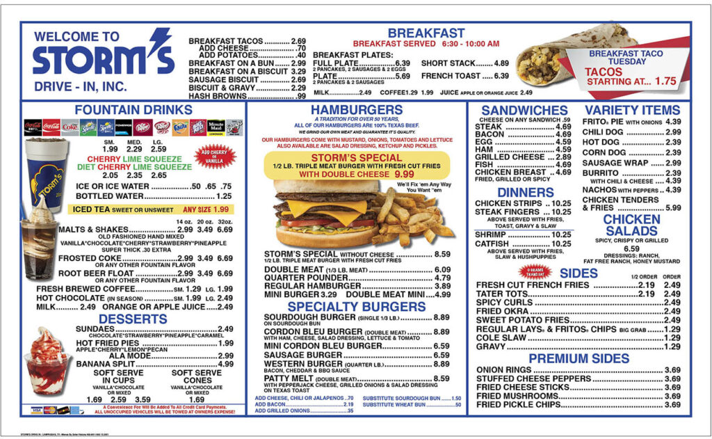
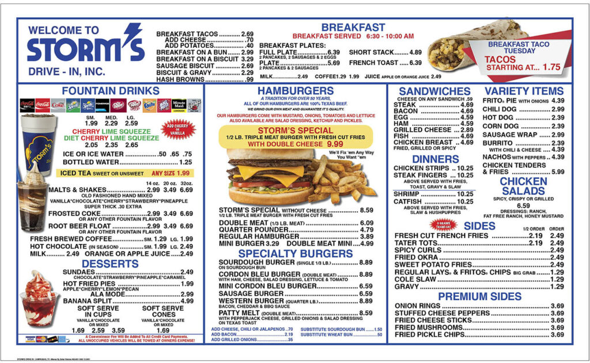

Storm's Drive-In has been around since 1959. Located in the heart of Lampasas County, it stands ready to serve every person who comes through in a timely manner. When you come, come ready to have the best food that you've ever had, and bring your friends too! Come ready to eat anything from our famous Storm's Special to our delicious shakes!
 
